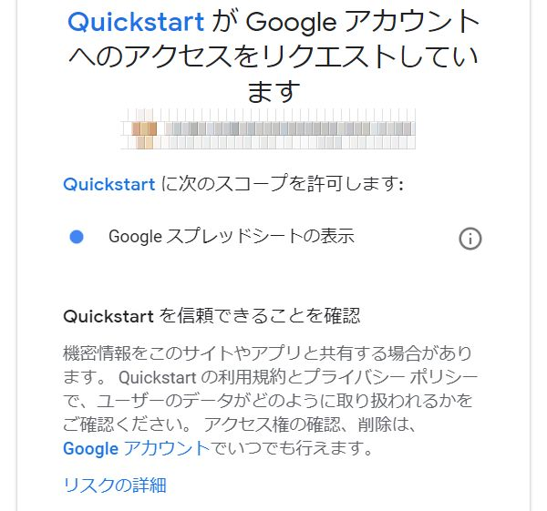

1.Googleアカウントを用意
2.Google Spread Sheetsでシートを作る
3.Apps Scriptを書く
[ツール]から、[スクリプトエディタ]を選択して、コードを入力。
Apps Script
function myFunction() {
var sheet = SpreadsheetApp.openByUrl('スプレッドシートのURLのコピペ');
var response = UrlFetchApp.fetch("http://raspberrypi.garameki.com/data/max31856_write.log");
var contents = response.getContentText();
var arr = contents.split('\n');
arr = arr.splice(-1001,1000);
for(var ii=0,len=arr.length;ii<len;ii++)arr[ii] = arr[ii].split(',');
sheet.getRange("A2:I1001").setValues(arr);
}
4.Scriptを実行する
5.グラフを描く
6.グラフの右肩のマークをクリックしてグラフを公開し、iframeをホームページに埋め込む
7.sheetの編集からトリガーを選択
「トリガの追加」を押す
モーダルウィンドウでの入力は下記の通り
「実行するデプロイ」→「HEAD」
「イベントソースを選択」→「時間主導型」
「時間ベースのトリガーのタイプを選択」→「分ベースのタイマー」
「時間の間隔を選択（分）」→「1分おき」
以上
以降、没ネタ
Google Spread Sheetsに気をよくして、測定したデータを、自動でグラフ化して、それをホームページで閲覧できるようにしようと思います。
ただし、CGIベースですので、グラフは、自動更新ではありません。
IFTTTでのアップデートは参考記事にこと描きませんが、グラフまで自動化した例は見当たりません。
ここでは、Googleのドキュメントを踏襲して、Node.jsを使ったやり方で、できればグラフ化まで自動してみたいと思います。
ピボットテーブルは自動でできるらしいことは、ドキュメントに書いてあります。自動グラフ化のドキュメントも捜してみます。
参考サイト
- Comprehensive access to spreadsheets
- Python Quickstart
- Google APIの認証の種類
- 途中から有料 : これだけ押さえておけばあらゆるAPIを呼び出せる！ Google APIを使用するための基本
- Google Maps APIでの料金問題の最新まとめ
- Qiita : Google SpreadSheetが取得したデータを用いてグラフを作成する （この部分は特にプログラミングは必要なく、普段使っているように表を元にグラフを作っておけば新しいデータを取得した際にグラフが更新される）
- PythonとSheets API v4でGoogleスプレッドシートを読み書きする
-
-
google APIのサービスの中には有料のものもあるので気を付ける
こんなサイトもみた
導入
参考サイト２で導入はすべてOK
1.準備しておくもの
- python 2.6以上
- pip パッケージインストーラ
- googleのアカウント
RaspberryPi3にはpython3とpipは備わっているので、googleアカウントを用意すればOK
2.google spread sheets APIをオンにする
ENABLE GOOGLE SHEETS APIを押す
するとモーダルウィンドウが開いて、入力を求められる
Project名を入力して、許諾するにチェックを入れ、nextを押す
Client IDとClient Secretが発行されたら、
DOWNLOAD CLIENT CONFIGURATIONを押す
すると、どこに保存するか聞いてくるので、とりあえず、~/に保存。
「API Credentials and usage」はいつでも、「APIコンソール」から、変更できます。とのこと。
ダウンロードしたファイルは自分のワーキングディレクトリに入れてくださいとのこと。
たぶん、pythonコードを実行するディレクトリだと思うから、あとでcgi-binに移す。
3.ライブラリをダウンロード
$ pip install --upgrade google-api-python-client oauth2client
Collecting google-api-python-client
Downloading https://files.pythonhosted.org/packages/56/04/5259a17a16a779426f6e2ac62796135b0d4a59cf8033a21037fd4ba5bf81/google_api_python_client-1.7.4-py3-none-any.whl (55kB)
Collecting oauth2client
Downloading https://files.pythonhosted.org/packages/95/a9/4f25a14d23f0786b64875b91784607c2277eff25d48f915e39ff0cff505a/oauth2client-4.1.3-py2.py3-none-any.whl (98kB)
Collecting google-auth>=1.4.1 (from google-api-python-client)
Downloading https://files.pythonhosted.org/packages/24/62/8b9612b1055cfbecd577e252446fe5f939f6818d0b7ddc27bb872f233cd4/google_auth-1.6.1-py2.py3-none-any.whl (68kB)
Collecting google-auth-httplib2>=0.0.3 (from google-api-python-client)
Downloading https://files.pythonhosted.org/packages/33/49/c814d6d438b823441552198f096fcd0377fd6c88714dbed34f1d3c8c4389/google_auth_httplib2-0.0.3-py2.py3-none-any.whl
Collecting six<2dev,>=1.6.1 (from google-api-python-client)
Downloading https://files.pythonhosted.org/packages/67/4b/141a581104b1f6397bfa78ac9d43d8ad29a7ca43ea90a2d863fe3056e86a/six-1.11.0-py2.py3-none-any.whl
Collecting httplib2<1dev,>=0.9.2 (from google-api-python-client)
Downloading https://files.pythonhosted.org/packages/ce/ed/803905d670b52fa0edfdd135337e545b4496c2ab3a222f1449b7256eb99f/httplib2-0.12.0.tar.gz (218kB)
Collecting uritemplate<4dev,>=3.0.0 (from google-api-python-client)
Downloading https://files.pythonhosted.org/packages/e5/7d/9d5a640c4f8bf2c8b1afc015e9a9d8de32e13c9016dcc4b0ec03481fb396/uritemplate-3.0.0-py2.py3-none-any.whl
Collecting pyasn1-modules>=0.0.5 (from oauth2client)
Downloading https://files.pythonhosted.org/packages/19/02/fa63f7ba30a0d7b925ca29d034510fc1ffde53264b71b4155022ddf3ab5d/pyasn1_modules-0.2.2-py2.py3-none-any.whl (62kB)
Collecting pyasn1>=0.1.7 (from oauth2client)
Downloading https://files.pythonhosted.org/packages/d1/a1/7790cc85db38daa874f6a2e6308131b9953feb1367f2ae2d1123bb93a9f5/pyasn1-0.4.4-py2.py3-none-any.whl (72kB)
Collecting rsa>=3.1.4 (from oauth2client)
Downloading https://files.pythonhosted.org/packages/02/e5/38518af393f7c214357079ce67a317307936896e961e35450b70fad2a9cf/rsa-4.0-py2.py3-none-any.whl
Collecting cachetools>=2.0.0 (from google-auth>=1.4.1->google-api-python-client)
Downloading https://files.pythonhosted.org/packages/76/7e/08cd3846bebeabb6b1cfc4af8aae649d90249b4aeed080bddb5297f1d73b/cachetools-3.0.0-py2.py3-none-any.whl
Installing collected packages: six, cachetools, pyasn1, rsa, pyasn1-modules, google-auth, httplib2, google-auth-httplib2, uritemplate, google-api-python-client, oauth2client
Running setup.py install for httplib2: started
Running setup.py install for httplib2: finished with status 'done'
Successfully installed cachetools-3.0.0 google-api-python-client-1.7.4 google-auth-1.6.1 google-auth-httplib2-0.0.3 httplib2-0.12.0 oauth2client-4.1.3 pyasn1-0.4.4 pyasn1-modules-0.2.2 rsa-4.0 six-1.11.0 uritemplate-3.0.0
You are using pip version 10.0.1, however version 18.1 is available.
You should consider upgrading via the 'python -m pip install --upgrade pip' command.
4.pythonコードを実行
新規でquickstart.pyを~/に作成して、コードをコピペして実行する
$ python3 quickstart.py

危険なので気を付けましょうという表示が出たら、確認して
許可を押す
「The authentication flow has completed.」と、表示されたら、認証終了。